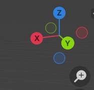
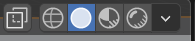
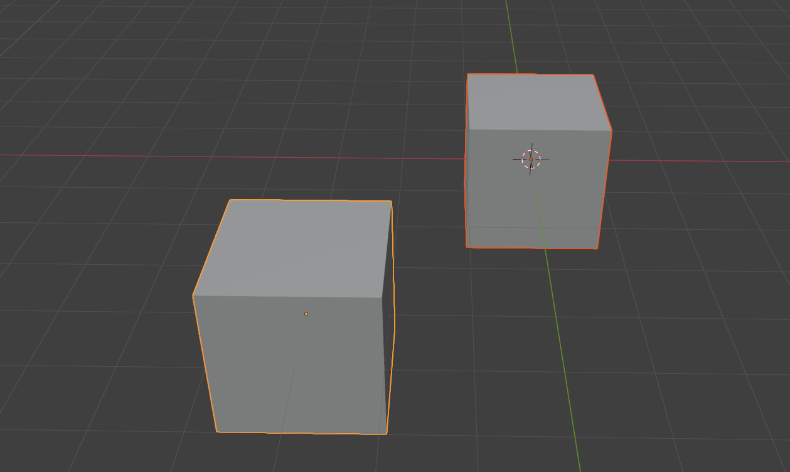
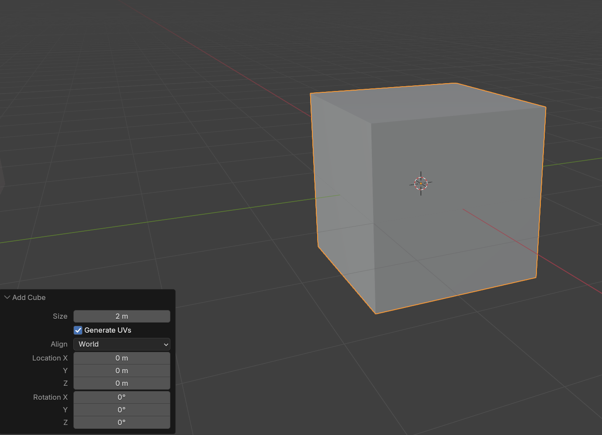
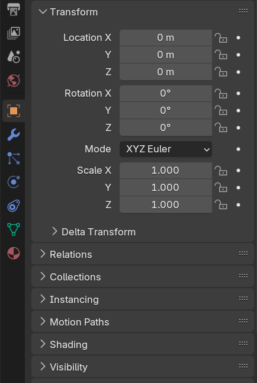
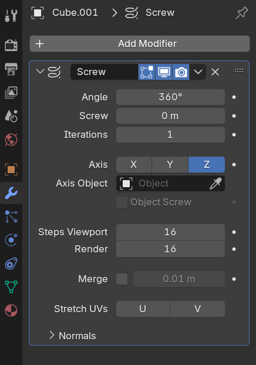
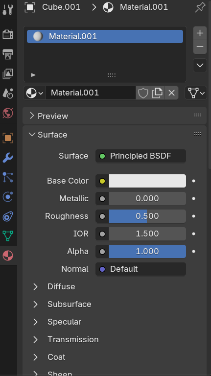
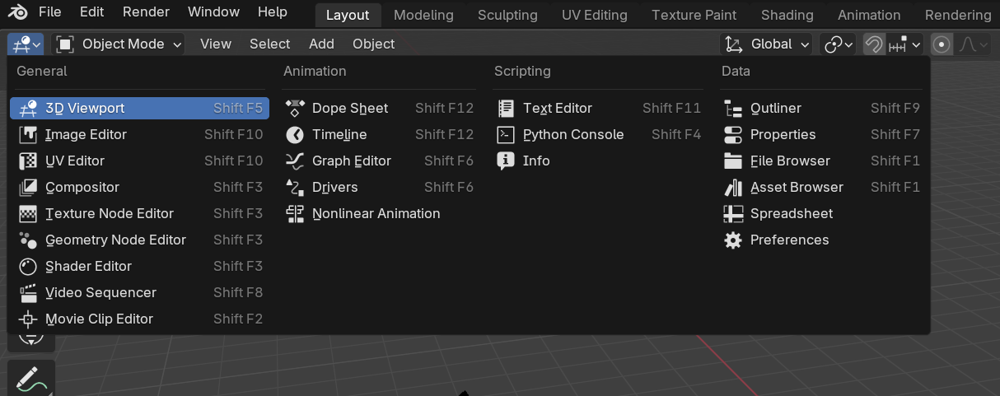

Basics
View
Rotate the view with the middle mouse and dragging or the gizmo on the top right corner.

To move left/right or up/down hold down shift + middle mouse and drag. Or click and drag the hand icon on the right.
To move forward and back war we can use wheel
To zoom in and out the can use the shift + ctrl + wheel
Toggle view between perspective and orthographic with numpad 5 or the grid button on the right.
Align camera to axis:
- x:
numpad - y:
numpad - z:
numpadWithctrlhold down you can position camera at the opposite side of the axis.
To get the camera viewpoint numpad 0
To focus back to the scene origin shift + c
To focus on a specific object click the object and use numpad ,
To hide everything and only focus on one object numpad /
Shading mode of view

We can switch between different shading modes in the view with z or click on the modes in the top right corner.
Wireframe view - shift + z
Solid - all materials are shown with default gray material
Material - shows a preview of materials and textures
Wireframe - Wireframe view
Renderer - Low quality render
Select
We can select objects with left mouse and multiple objects with shift + left mouse

When you select multiple objects you see that one has a brighter edge than the others. This on is the currently active selection.
To un select an object shift+ left mouse on the object you want to unselect - if the object is not the active one it will become the active one.
We can also undo a selection with ctrl + z
Select everything a and double a for unselecting.
Create/Delete Objects
With shift + a we can open the menu to create shapes.
When you created an object a little menu for the properties appear on the bottom of the 3D viewport.

You loose that menu when you click somewhere else but not the menu but you can get it back with F9
To delete objects click the object and push x
We also can temporally hide object to clean up the viewport.
With h you hide the selected object and to show the hidden objects again with alt + h
To hide unselected objects shift + h
Transforming objects
To move an object click an object and press g
To rotate an object click the object and press r
To scale an object click the object and press s
To force an object to apply these transformations along the axis you can press x,y,z after the transformation shortcut activation.
Modes
Blender has different modes which allow different ways to edit our geometries.
With ctrl + tab we can switch modes via shortcut or we pick the modes on the top left corner.
In the Object mode we can transform, create and delete objects.
In the Edit mode we can edit the geometry and it's vertices, edges and faces.
Because it is so frequently used it has it's own shortcut with tab.
To switch between vertex 1, edge 2 and face 2 selection mode
Properties
Object Properties
In the Object properties we can change the properties with numerical values to be more accurate if necessary. 
Modifier Properties
In the Modifier properties you can add non destructive modifiers to change your geometry. 
Material Properties
The Material properties allow to create Materials and edit them. We also can select already created materials

Render Properties
In the Render properties we can pick which renderer we use for our blender scene. Blender has EEVEE,Workbench and Cycles as default renderer. We also can add our own renderer via plugins to Blender. The most used render engines are:
EEVEE- GPU real-time renderer - performant but lacks realismCycles- RayTracing engine - not performant but high realism
To render the current camera image F12
Shortcuts
Shortcuts can have different actions depending on what's behind the cursor.
LAYOUTS
LEFT CLICK select
RIGHT CLICK context menu
N toggle sidebar
T toggle tools
CTRL + SPACE maximize area
Q favorites
F3 search for any action (should switch to SPACE)
CMD/CTRL + Z undo (almost any changes, even selection)
CMD/CTRL + SHIFT + Z redo (almost any changes, even selection)
FIELDS
CMD/CTRL + C to copy (above field)
CMD/CTRL + V to paste (above field)
SCENE GRAPH
C new collection
M move to collection
VIEW
MIDDLE WHEEL rotate
SHIFT + MIDDLE WHEEL truck and pedestal
CTRL + MIDDLE WHEEL zoom
CTRL + SHIFT + MIDDLE WHEEL dolly
. or , focus section
5 toggle ortho/persp
1, 3, 7 position view on axis (CMD/CTRL to invert axis)
SHIFT + 7 position view in front of the selected face
0 position view on camera
CMD/CTRL + 0 position view on active camera and set as default camera
Z show shadings wheel
ALT + Z Toggle x-ray
SHIFT + S change cursor position
SHIFT + C focus on all scene
CTRL + ALT + Q set quad view
OBJECT
SHIFT + A create object
F9 to re-open creation options
X delete
CTRL + A apply transformations to the geometry
G translate
(X, Y, Z to force axis, SHIFT for precision, CTRL to round)
R rotate
(X, Y, Z to force axis, SHIFT for precision, CTRL to round)
S scale
(X, Y, Z to force axis, SHIFT for precision, CTRL to round)
S normalized scale
ALT + G reset position
ALT + R reset rotation
ALT + S reset scale
SHIFT + TAB toggle snap
SHIFT + D duplicate
ALT + D link duplicate
H hide selection
SHIFT + H isolate
/ isolate and focus
ALT + H unhide all
CMD/CTRL + J merge
SHIFT + R repeat last
SELECTION
A select all
A, A unselect all
B border selection
C circle selection (WHEEL to change size)
CTRL + I invert selection
SHIFT + LEFT CLICK add to/remove from selection
MODES
CTRL + TAB change mode
EDITION
TAB toggle edition
1 vertex
2 edges
3 faces
ALT + LEFT CLICK edge loop selection
CTRL + ALT + LEFT CLICK parallel edge loop selection
G, G translate on edge (C to go beyond the limit)
E extrude (ALT + E extrude with options)
I inset
I, I individual inset
CTRL + B bevel
CTRL + R loop cut
J connect vertices
K knife cut (Z cut through)
P separate
F create edge or face
V Rip
CTRL + T triangulate
ALT + M merge
CTRL + L select island
SHIFT + E change crease (for subdivision surface)
U unwrap menu
M merge
CURVES
C toggle open
V change handle type
ALT + S change thickness of selected points
PAINTING
F change brush size
SCULPTING
F change brush size
OUTLINER
. go to selected object
RENDERING
F12 render
CTRL + B set render region
CTRL + ALT + B reset render region
TIMELINE
ARROW RIGHT Next frame
ARROW LEFT Previous frame
ARROW UP Next keyframe
ARROW DOWN Previous keyframe
, Focus selection
I Insert keyframe
T Choose interpolation
P Define Range
ALT + P Reset range
V Change handle type
Change UI
Change Area
To change an area we can click on the top left button. 
Resize Area
To resize an area go with the mouse to the side of an area/between two areas and the drag it.
Create a new Area
To create a new area go to one of the corners till we get a crosshair and then drag the mouse.
With ESC you can stop it.
Remove an Area
The idea is to un-split two areas. For that you need to decide which of the areas is taking over the other that you want to get rid of. Then start in the corner from the area that you want to keep and drag into the other area till it gets a little bit brighter.
Change Start File
To save your current UI setting as the startup setting you can go to File->Defaults->Save Startup File